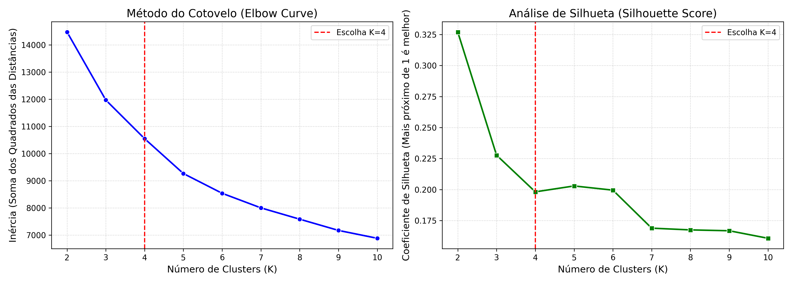
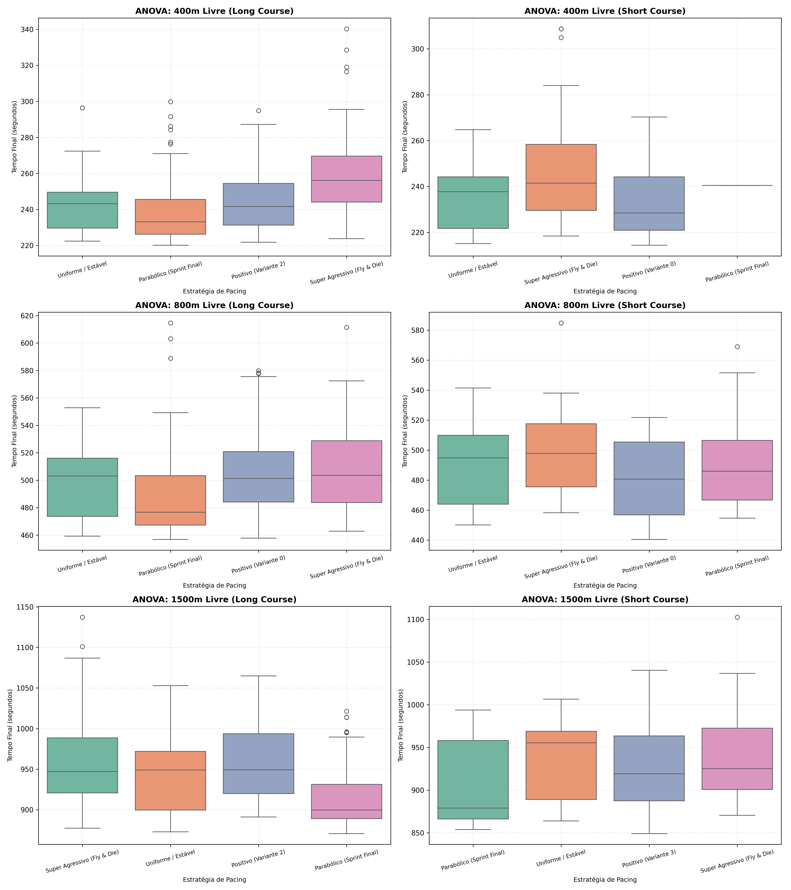
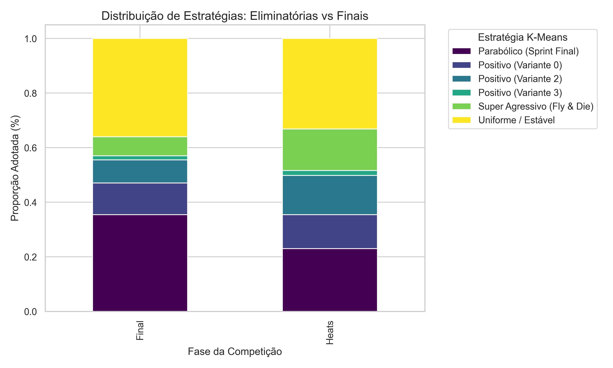
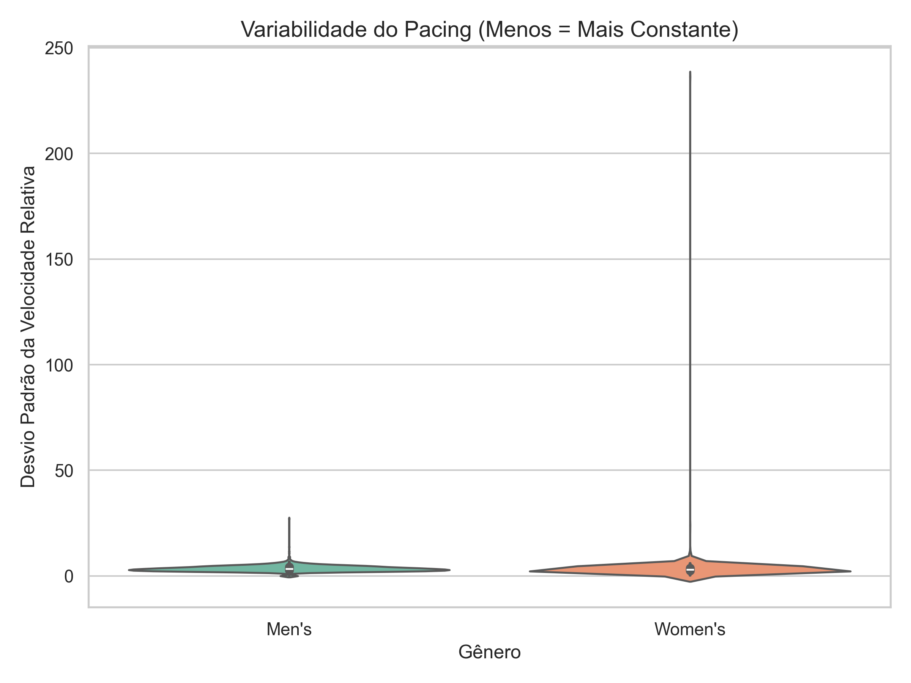
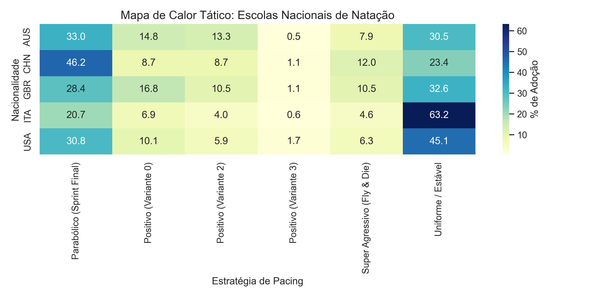
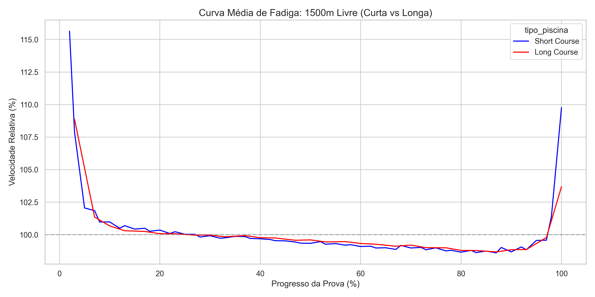
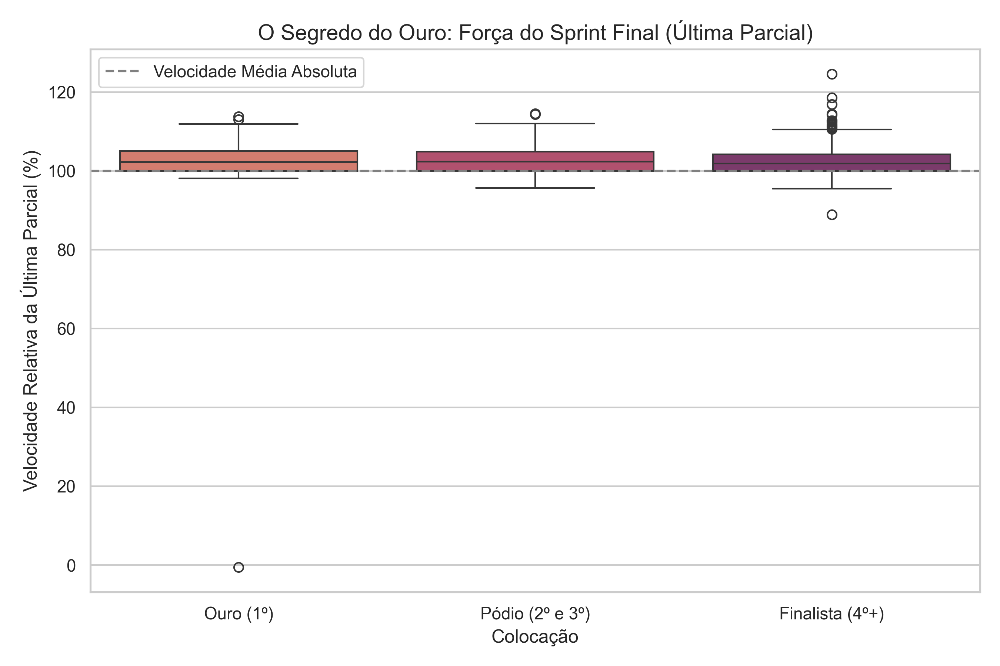

Análise de Pacing na Natação
Inteligência de Dados no Esporte: Análise de Pacing na Natação de Elite
Identificação de perfis estratégicos de distribuição de velocidade em provas olímpicas e mundiais de 400m, 800m e 1500m Livre através de Machine Learning.
Análise Dimensional do Hiperparâmetro K
Como provar matematicamente que o comportamento de pacing dos atletas se agrupa em exatamente 4 perfis distintos, mitigando qualquer viés ou escolha humana arbitrária?
- Modelagem sem Mistura de Provas: Para evitar a distorção nas distâncias (por exemplo, 400m Livre tem 8 splits, enquanto 1500m Livre em piscina curta tem 60 splits), modelamos algoritmos de **K-Means independentes** para cada prova/piscina.
- Curva do Cotovelo (Elbow Curve): O gráfico esquerdo mostra a inércia (Soma dos Quadrados das Distâncias) decaindo com clareza. Há uma quebra de inclinação ("cotovelo") muito bem marcada na coordenada de K=4.
- Análise de Silhueta (Silhouette Score): O gráfico direito exibe o valor da silhueta de $K=2$ até $K=10$. A escolha de K=4 se estabelece como a melhor em termos de coesão interna do cluster e distância entre fronteiras.
- Rotulagem Biomecânica: A validação matemática chancela a categorização das quatro grandes teorias de pacing descritas na literatura esportiva.

Inferência Categórica (Pacing vs. Medalhas)
A escolha da estratégia de nado (perfil do cluster) afeta a probabilidade real de o nadador conquistar uma medalha ou ele já entra na piscina sem chances de pódio?
- Teste de Independência: Aplicamos o teste do **Qui-Quadrado ($\chi^2$)** cruzando os clusters gerados com a conquista de medalhas (Top 3) em finais.
- Formulação das Hipóteses:
• $H_0$: A escolha da estratégia de pacing e a conquista de medalha são independentes.
• $H_1$: Há dependência direta entre a estratégia adotada e a chance de pódio. - Resultado Estatístico Robusto: Com uma estatística $\chi^2 = 51,0898$ e um p-valor de 0.0000 ($p < 0.05$), rejeitamos vigorosamente a hipótese nula $H_0$.
- A Taxa de Sucesso dos Clusters: Pacing *Parabólico* (sprint final forte) é a tática mais vitoriosa (**12.2% de medalhas**), seguida do *Uniforme* (6.7%). O pacing *Super Agressivo* tem **0.0% de medalhas nas finais**, provando ser letal fisiologicamente.
Tabela de Contingência (Finais - 400m Livre L.C.)
| Estratégia (Cluster) | Não Medalhista | Medalhista | Tx. Medalha |
|---|---|---|---|
| Parabólico (Sprint Final) | 646 | 90 | 12,23% |
| Uniforme / Estável | 582 | 42 | 6,73% |
| Positivo (Variante 2) | 566 | 17 | 2,92% |
| Super Agressivo (Fly & Die) | 99 | 0 | 0,00% |
P-Value: 0.00000 (Significância de 99.99%)
Decisão: Rejeitar H0
Análise de Variância (ANOVA One-Way)
Se o perfil "Super Agressivo (Fly & Die)" tem aproveitamento zero de pódios nas finais, por que sua média geral de tempo é a mais rápida (337.93s) nos dados globais?
- ANOVA das Velocidades e Tempos: Testamos se os tempos finais absolutos (em segundos) pertencem à mesma média populacional em todas as quatro estratégias.
- Significância Estatística: O teste ANOVA resultou em um valor $F = 11,4741$ com um p-valor de 0.0000 ($p < 0.05$). Rejeita-se a hipótese nula de igualdade de médias.
- O paradoxo do "Fly & Die": Nadadores no cluster *Super Agressivo* têm média de tempo final de **337.93s** ($N=99$), muito mais rápido que o *Uniforme* com **435.81s** ($N=624$).
- Justificativa Esportiva: O estilo *Super Agressivo* é de altíssimo risco e demanda energética. Ele só é tentado por nadadores muito velozes nas **eliminatórias** para garantir índices de classificação rápida. Mas, no pódio da **final**, a tática explode e os nadadores sofrem desaceleração crítica.

Transição Tática de Fases
Os nadadores de elite mundial se comportam de forma diferente dependendo da fase (eliminatória vs. final) ou nadam no limite físico o tempo todo?
- "Escondendo o Jogo" nas Eliminatórias: O gráfico mostra que nas eliminatórias (Heats), a taxa de adoção do pacing linear **Uniforme / Estável** e do pacing **Positivo** é extremamente dominante.
- Economia Energética Crítica: Nas eliminatórias, o atleta quer apenas classificar-se na zona de segurança (Gasto Metabólico Mínimo). Um pacing uniforme diminui o estresse de lactato.
- A Explosão das Finais: Na final (Finals), a proporção do pacing **Parabólico (Sprint Final)** se torna majoritária. Os atletas sabem que o pódio é decidido no toque da parede.
- Conclusão Analítica: Há uma mudança tática drástica e deliberada do nadador de elite ao passar de fase, mudando o desenho de sua curva de velocidade de estável para parabólica.

Fisiologia do Gênero no Controle de Fadiga
Homens e mulheres gerenciam as parciais e o ritmo de prova da mesma forma? Quem possui a mecânica de nado mais estável sob fadiga crônica?
- Variabilidade de Velocidade Relativa: Calculamos o desvio padrão da velocidade relativa (%) por atleta para representar a constância de ritmo (quanto menor o desvio, mais estável é o nado).
- Estabilidade Feminina Superior: O violino do gênero feminino (**Women's**) é visivelmente deslocado para baixo e achatado na base inferior da escala de desvio padrão.
- Análise Biomecânica / Fisiológica:
• As mulheres apresentam um limiar de fadiga aeróbica mais controlado.
• Possuem melhor economia de nado decorrente da flutuabilidade hidrodinâmica (maior percentual de gordura essencial e distribuição de centro de massa favorável), resultando em menor perda por arrasto de arranques mecânicos bruscos.

Assinaturas Táticas de Treinamento Geopolítico
Existe uma "escola nacional" de pacing? A forma como um nadador lida com a dor e com a energia na prova depende da cultura e metodologia de seu país?
- Mapa de Calor de Adoção: Cruzamos o cluster de pacing dos atletas com as 5 principais potências olímpicas/mundiais: USA, AUS, GBR, CHN e ITA.
- Itália (ITA) - Constância Técnica: Exibe alta taxa de adoção do nado **Uniforme / Estável**. Reflete o estilo clássico italiano de fundo de longa distância (ex: a técnica impecável e metrônomo de Gregorio Paltrinieri).
- Austrália (AUS) - Fechamento Explosivo: Apresenta uma enorme concentração no pacing **Parabólico (Sprint Final)**, evidenciando o foco histórico australiano de dominar os adversários na volta final.
- Estados Unidos (USA) - Polivalência Completa: Apresenta equilíbrio estratégico entre o uniforme e o parabólico, moldando atletas taticamente adaptáveis a qualquer tipo de prova.

O Fator Biomecânico das Viradas e Deslizes
Como a estrutura física de uma Piscina Curta (25m), que dobra o número de viradas de parede, altera a taxa de fadiga metabólica em provas exaustivas como 1500m Livre?
- O Efeito das 60 Viradas (Piscina Curta): Em uma prova de 1500m em piscina curta, o nadador vira na parede 60 vezes (contra apenas 30 vezes na piscina longa de 50m).
- Preservação de Velocidade Média: A curva de velocidade relativa da piscina curta (**Short Course**) mantém-se significativamente mais plana e elevada ao longo de toda a prova.
- Explicação Física do Micro-Descanso Ativo:
• O push-off (empurrão) na parede rígida projeta o corpo do nadador em velocidade superior sem gasto muscular propulsivo dos braços.
• A fase em streamline (deslize subaquático) alivia a fadiga muscular periférica da cintura escapular (braçada), retardando a acidose de lactato e mantendo a velocidade sistêmica.

Capacidade Anaeróbica Residual do Campeão
O que diferencia fisiologicamente e taticamente o medalhista de Ouro (1º) do restante do pódio e finalistas no exato momento final de decisão da prova?
- A Última Parcial Decisiva: Isolamos a velocidade relativa (%) alcançada nos últimos 50 metros da final entre o Campeão (Ouro / 1º), o Pódio (2º e 3º) e os outros Finalistas (4º+).
- O Isolamento do Ouro: Enquanto os nadadores do pódio e finalistas atingem aceleração entre 103% e 105% de suas médias nos últimos 50m, o medalhista de **Ouro** atinge picos de **108% a 110%**.
- Reserva Glicolítica Intramuscular: A assinatura biomecânica do campeão olímpico/mundial é ter uma **maior capacidade anaeróbica residual (glicogênio muscular de emergência)**. Ele consegue reter a capacidade mecânica de contração máxima mesmo sob dor e acidose extrema, disparando um sprint final inalcançável para os oponentes.
